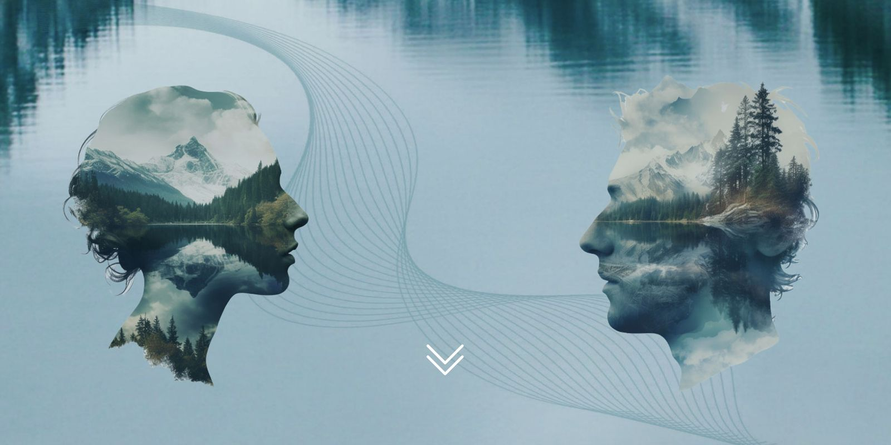

About
Because water is life.
CodeBlue BC is a citizens’ campaign to secure and sustain British Columbia’s fresh water sources. Forever.
Why “CodeBlue”?
In a hospital, “code blue” is the call that brings everyone running — a life is on the line and every second counts. We chose the name because that’s exactly where B.C.’s watersheds stand: record droughts, historic floods, disappearing salmon, and rules that aren’t being enforced. Look closely at our droplet logo and you’ll see the heartbeat line running through the river. That pulse is the whole point.
Who’s behind this
CodeBlue BC is powered by Watershed Watch Salmon Society and allies across the province, and stands with the BC Watershed Security Coalition — 57+ organizations representing more than 285,000 British Columbians. The campaign is non-partisan: water doesn’t care how you vote.
Get in touch
Story tips, hero nominations, partnership ideas, media requests — reach the team through the CodeBlue BC site or on Facebook and Instagram.
About the live data
The Water Watch dashboard and homepage tiles read public monitoring feeds directly in your browser: the B.C. Drought Information Portal (drought levels, water scarcity assessments), Environment and Climate Change Canada’s hydrometric network (river flows), and the B.C. River Forecast Centre (snow basin indices). No accounts, no tracking, no analytics — this site collects nothing about you.
Photo credits
This site pairs CodeBlue BC campaign imagery with openly licensed photography from Wikimedia Commons. Thank you to the photographers.
Cleveland Dam View (119325993).jpeg — Jeff Macleod (CC BY-SA 3.0)
{kind=link}
Coquihalla Canyon 2.JPG — The High Fin Sperm Whale (CC BY-SA 3.0)
{kind=link}
HighRockLowWater2002.JPG — Hennap (talk) (CC BY-SA 3.0)
{kind=link}
Fraser River, Surrey (504715) (23636219344).jpg — Robert Linsdell from St. Andrews, Canada (CC BY 2.0)
{kind=link}
Wapta Mountain in Yoho National Park (49465900921).jpg — Bernd Thaller from Graz, Austria (CC BY 2.0)
{kind=link}
Air North flight from Whithorse to Kelowna - Nadina Mountain Provincial Park (14490233613).jpg — Murray Foubister (CC BY-SA 2.0)
{kind=link}
Pacific skyline, Kitlope Heritage Conservancy.jpg — Sam Beebe (CC BY 2.0)
{kind=link}
Cathedral Grove - Old Growth Forest - Vancouver Island BC - Canada - 04.jpg — Adam Jones, Ph.D. (CC BY-SA 3.0)
{kind=link}
Vineyards Lake Okanagan.jpg — Kelly Nigro (CC BY 2.0)
{kind=link}
A hike in the Tunnels area of the Coquihalla Canyon - (28560518281).jpg — Murray Foubister (CC BY-SA 2.0)
{kind=link}
Sockeye Salmon. Oncorhynchus nerka Spawning - Flickr - gailhampshire.jpg — gailhampshire from Cradley, Malvern, U.K (CC BY 2.0)
{kind=link}
AdamsRiverWide.JPG — Theinterior (CC BY 3.0)
{kind=link}
SockeyeSpawn inAdams.JPG — Theinterior (CC BY 3.0)
{kind=link}
MaleFemaleSockeyeSpawning.jpg — William Rosmus (CC BY-SA 4.0)
{kind=link}
Canadian Pacific Railway line in East Kootenay Wetlands near Fort Steele, British Columbia, Canada.jpg — Marek Ślusarczyk (Tupungato) Photo portfolio (CC BY 3.0)
{kind=link}
West Kiskatinaw River Wildfire, British Columbia, Canada - 7 June 2023 (52961618238).jpg — Pierre Markuse (CC BY 2.0)
{kind=link}
Campaign photography (otter, fishing, farmer, “our waters”) — CodeBlue BC / Watershed Watch Salmon Society.
Basemap tiles © OpenStreetMap contributors & CARTO. Live data: B.C. Drought Information Portal, ECCC Water Office, B.C. River Forecast Centre.